3D 뷰포트 에디터
가장 많이 사용하는 기본 에디터
구성 요소
- 에디터 셀렉터
- 모드 셀렉터
- 셀렉트 모두 툴
- 메뉴
- 트랜스포메이션 툴
- 스냅 툴
- 프로포셔널 에디트 툴
- 셀렉터빌리티/비저빌리티 툴
- 기즈모 툴
- 오버레이즈 툴
- 메시 에디트 툴
- 렌더 툴
- 툴바
- 기즈모
- 사이드바
모드 셀렉터
- 3D 뷰포트는 6개의 모드 제공
- Object Mode
- Editor Mode
- Sculpt Mode
- Vertex Paint
- Weight Paint
- Texture Paint
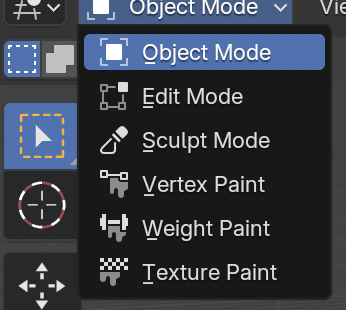
- 모드가 바뀌면 메뉴, 툴바 등을 포함한 다른 구성요소들도 바뀜
오브젝트 모드와 에디트 모드
- 가장 기본 모드는 오브젝트 모드와 에디트 모드
- 오브젝트 모드와 에디트 모드 변환 단축키: 탭(Tab)
- 오브젝트 모드와 에디트 모드 비교
- 오브젝트 모드: 오브젝트 하나를 편집 가능 (이동, 확대 등)
- 에디트 모드: 오브젝트를 구성하는 점, 선, 면을 개별적으로 편집 가능 (모양의 변형)
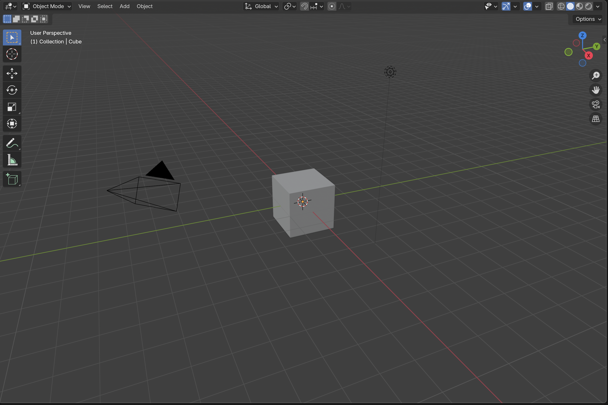
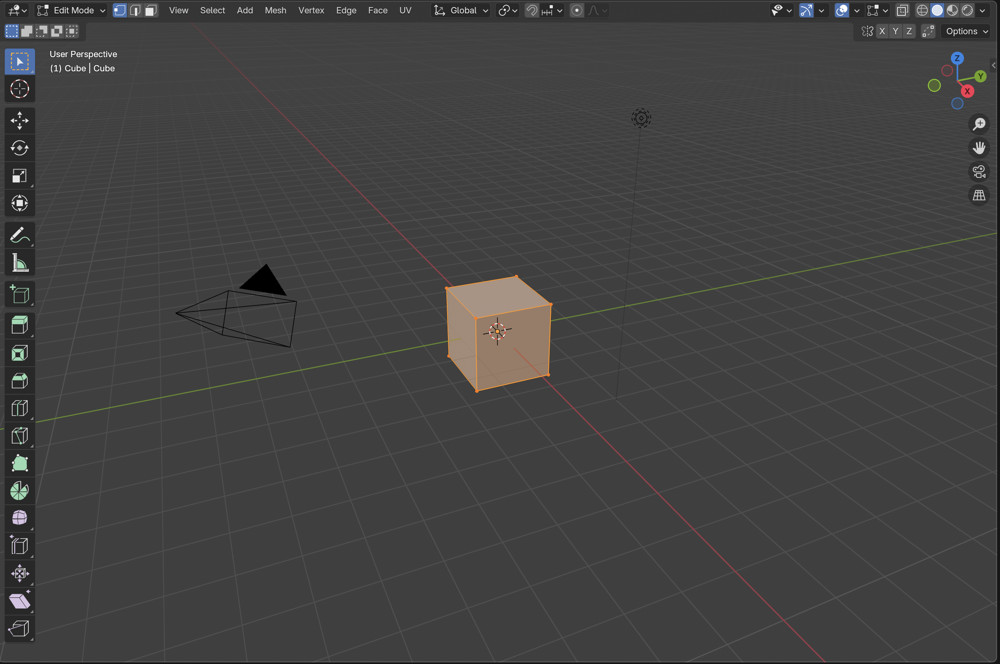
에디트 모드 주의점
- 에디트 모드는 오브젝트 모드에서 일단 선택된 하나의 객체에 대해서만 적용된다.
- 오브젝트 모드에서 여러개의 객체를 shift로 선택한 경우에는 해당 선택 객체 모두에 대해 동시 에디트 모드 선택이 가능
- 에디팅이 불가능한 객체(카메라, 라이트 등)에 대해서는 에디트 모드 전환할 수 없다.
셀렉트 모드 툴
- 에디트 모드에서만 보임
- 1, 2, 3 숫자키로 단축키 선택 가능
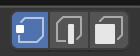
메뉴
- 모드에 따라 메뉴가 바뀜
오브젝트 모드 메뉴
- 뷰(View)
- 셀렉트(Select)
- 애드(Add)
- 오브젝트(Object)
에디트 모드 메뉴
- 뷰(View)
- 셀렉트(Select)
- 애드(Add)
- 메쉬(Mesh)
- 버텍스(Vertex)
- 엣지(Edge)
- 페이스(Face)
- UV
셀렉터빌리티/비저빌리티 툴
- 마우스 기호: 셀렉터빌리티. 선택 가능 여부
- 눈 기호: 비저빌리티. 보이는지 여부
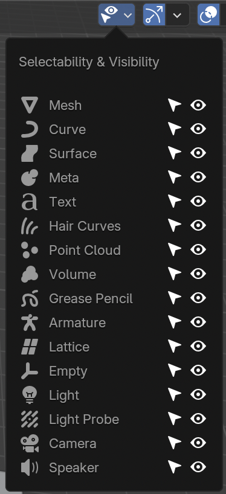
기즈모 툴
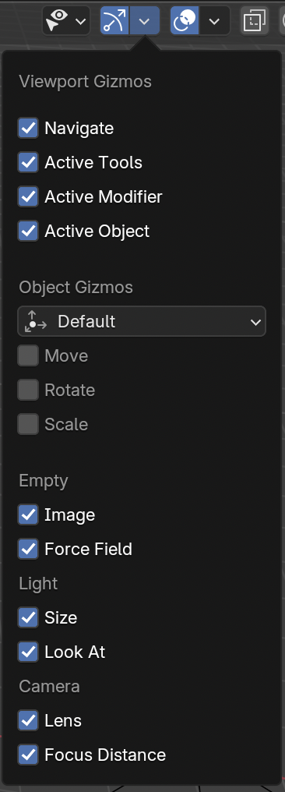
오버레이즈 툴
- 추가 정보의 표시 여부
- 오브젝트 모드와 에디트 모드가 다름
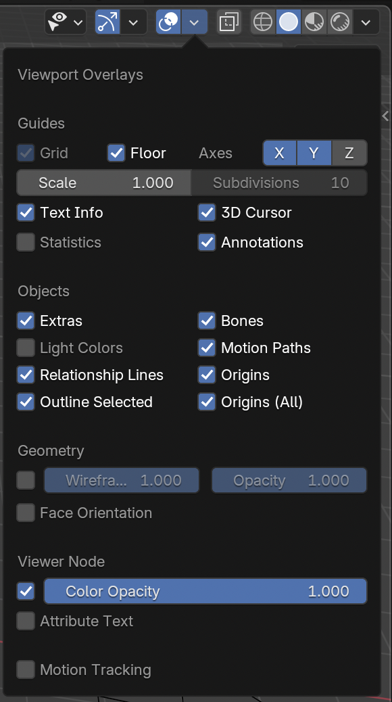
메시 에디트 툴
- 에디트 모드에서만 보임
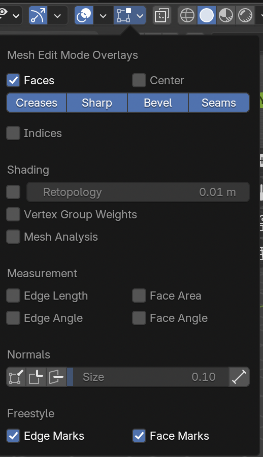
렌더 툴
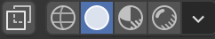
- 와이어프레임(Wireframe): 뼈대만
- 솔리드(Solid): 기본
- 머터리얼 프리뷰(Material Preview): 재질
- 렌더드(Rendered): 조명까지
툴바
- 작업도구
- 단축키: t
- 모드에 따라 달라짐
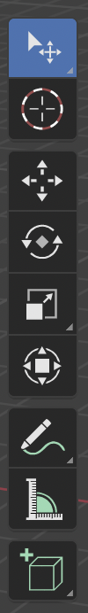
기즈모
사이드바
- 단축키: n
- 탭
- 아이템: 선택된 아이템의 위치 등
- 툴
- 뷰
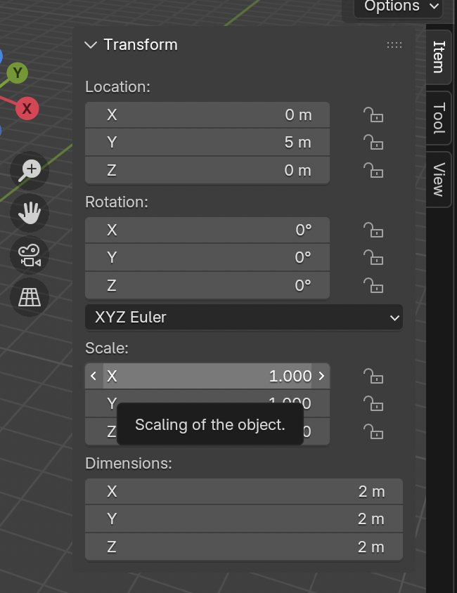
Last Operator panel
- 생성/변환 연산을 하면 왼쪽 아래에 생기는 패널
- 생성/변환 연산을 하지 않으면 보이지 않는다.